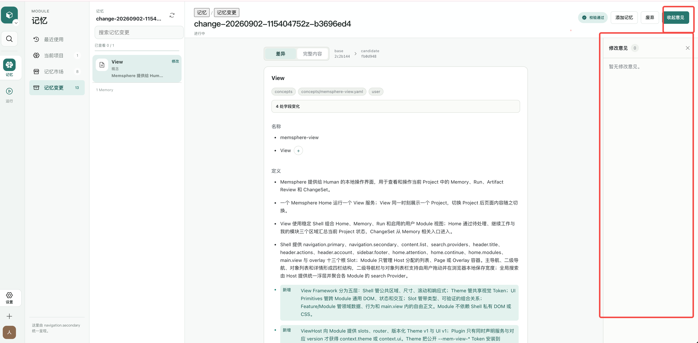
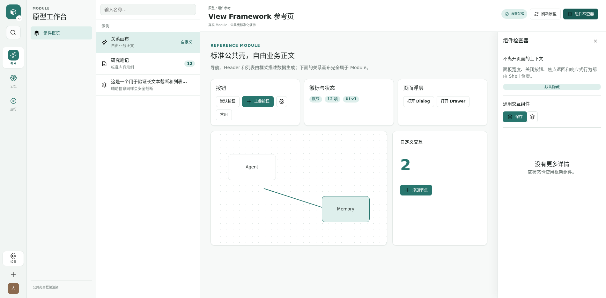

<!doctype html>
<meta charset="utf-8">
<title>Side panel design QA comparison</title>
<style>
  body { margin: 0; background: #202422; color: white; font: 14px sans-serif; }
  figure { margin: 0 0 24px; }
  figcaption { padding: 10px 16px; font-weight: 700; }
  img { display: block; width: 1903px; height: auto; background: white; }
</style>
<figure>
  <figcaption>Source layout reference — normalized from 3806×1874 to 1903×937</figcaption>
  
</figure>
<figure>
  <figcaption>Implementation — 1900×936 at deviceScaleFactor 1</figcaption>
  
</figure>
